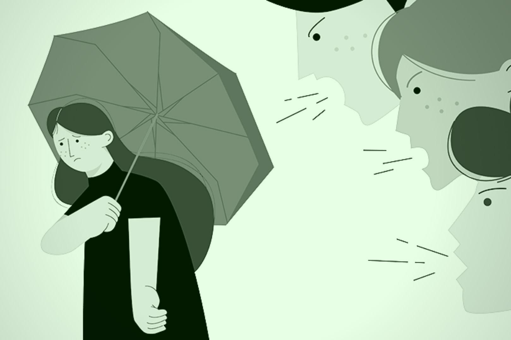
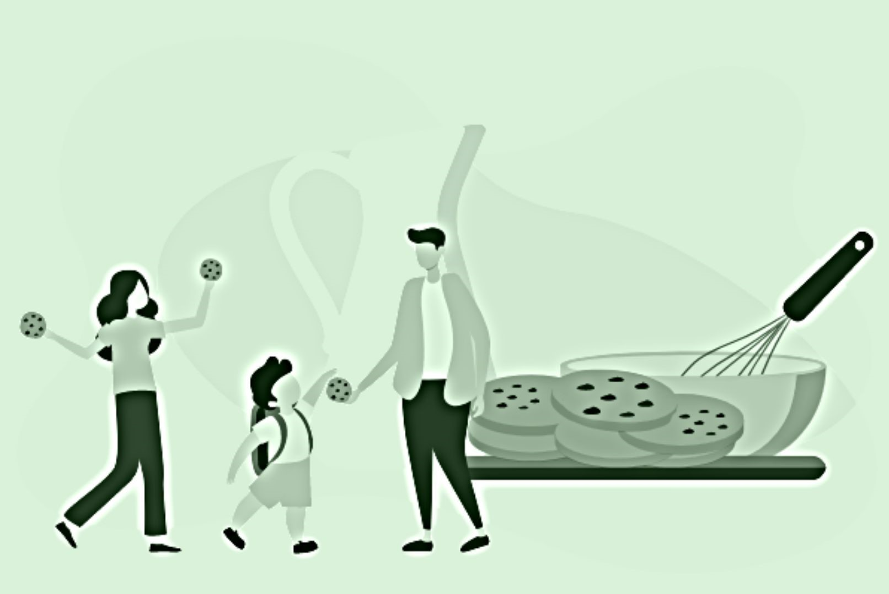

When someone has a bad opinion of you due to a distinctive attribute or personal trait that is perceived as, or is actually, a disadvantage or a negative stereotype, this is known as stigma. Social stigma of mental disorders has been known to exist in the middle of the 20th century, first theoretically and eventually empirically in the 1970s. We should solve social stigma because of how everyone in the institution or just anyone with HIV is being discriminated against for having aids. Because this issue impacts STD patients generally as well as our institution's patients, it is relevant to our institution's mission, cause, and goals. In addition to harming mental health and creating other issues, stigma also prevents some people from seeking help or telling because of their fear, as was already discussed. Fear of illness and of others' opinions. We decided to do this project in order to gather a group of people and at the same time try to educate them if they don’t already know what HIV/AIDS are and why it’s important for them to know what it is and why it’s important for us as a community to value institutions like MAAAI.
This project is significant because it brings attention to a pressing problem. Stigma is a social issue that practically all patients suffer or run into, not just those who have HIV or AIDS. This may aid in de-stigmatizing the disease while also enlightening and educating others, particularly the uninitiated and those who have been given incorrect or misleading information. In order to raise awareness among the uninformed and undereducated, primarily among young people, we also aim to target those who appear to have little to no education about these issues. We also hope to inspire or encourage them to share this information with others, not only to reduce stigma but also to spread the word and urge others to be cautious and safe.
In order to help elevate the way people see them in society, we decided on conducting a project where we can help convince common people that they should not be treated this way, that there are a lot of misconceptions about PLHIV, that they deserve just as much kindness and respect as the next person does.
Of course, with our equipment and capabilities, baking 100 cookies won’t be an easy feat but it doesn’t equate to the possible change we may bring in the way people see PLHIV. We’ll need to pour in hours of work and dedication in order to bring this project to life, as well as the financial cost of it all. With the 100 cookies we’ll bake, we will pack them into bags of 4 and aim to sell them to 25 people. We will make sure to share our advocacy each time we sell a bag.
Our project will promote awareness regarding HIV/AIDS.